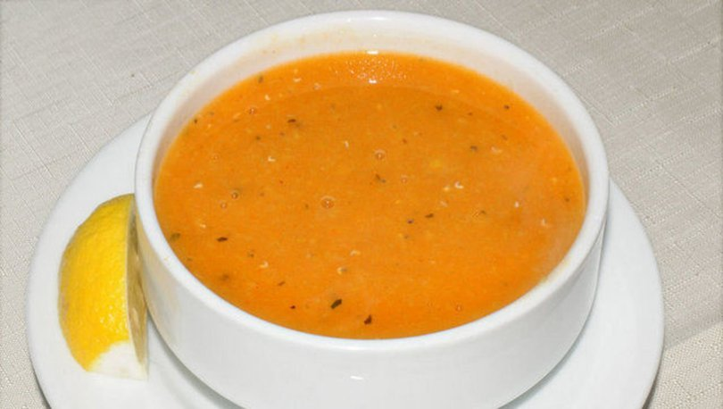

Red Lentil Soup

Description
Red lentil soup is one of the most popular and delicious soups in Turkish kitchen.
It is also really easy to make and really delicious with some bread!
Ingredients
- A cup of red lentils.
- Olive oil.
- Salt.
- Black pepper powder.
Steps
- Wash the red lentils until they are completely clean.
- Put some olive oil to the pan and heat it up.
- Add the red lentils and saute them for around 4-5 mins in low heat.
- Add 3 and a 1/2 cup of hot water.
- Boil it around 15 mins.
- Add the spices and crush them with a mixer until it is smooth.
- Enjoy your soup!